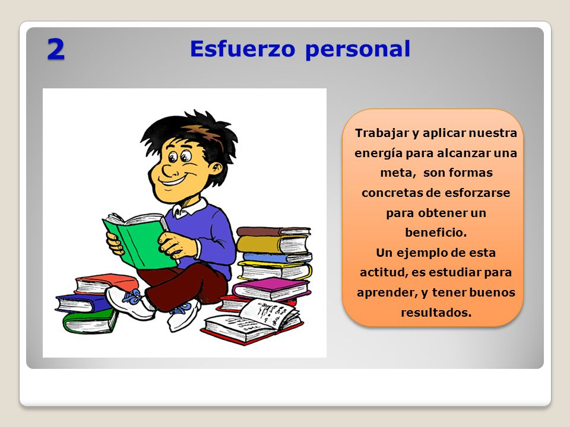

la vida
la vida requiere mucho sacrificio del ser humano, uno siempre se desanima por la misma gente no le da motivos, siga adelante hacer su propio bien su vida, de su forma hace lo mejor de su parte de su vida,
le dicen la verda que no sirve para nada ahi se desaniman, no siguen toda su vida se arrepienten uno tiene que porne de su propio esfuerzo poner la mente en otro ninel, motivarse con Dios cada año tiene que ir viendo que lo que esta asiendo bien o el mal en su vida, aunque cometen errores cuesta levantarse de donde quedo todo el tiempo de levantarse ya es demaciado tarde se le fue el tiempo de toda su vida;
trabajo estudio colegio y la universidad; ser positivo en todo lo que haga un buen trabajo de toda su vida se sientan muy orgulloso de su forma de ser dela vida esfuerso humano, asi puede vivir mejor su vida su familia sus seres queridos amigos amigas; tiene que creer el bien todo sus sacrificios asta donde llego su vida el tiempo no fue en bano en la vida esfurzo,

refleja paz y alegr&ia la mente en otro nivel;
uno tiene que estar motivado por todo lo bueno se puede hacer en el tiempo que pudo
las ganas de estudiar una carrera que si lo motive toda su vida ser positivo lo que iso,
para descubrire lo que se puede aser en el mundo;
la verdad si uno puede poco a poco ir cambiando al mundo,
esfuerzo en la vida del ser humanos,